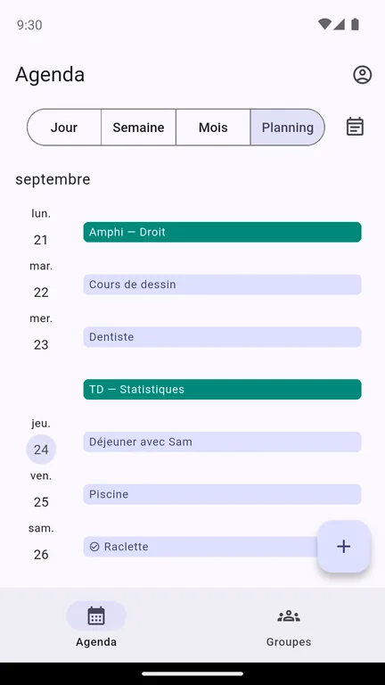
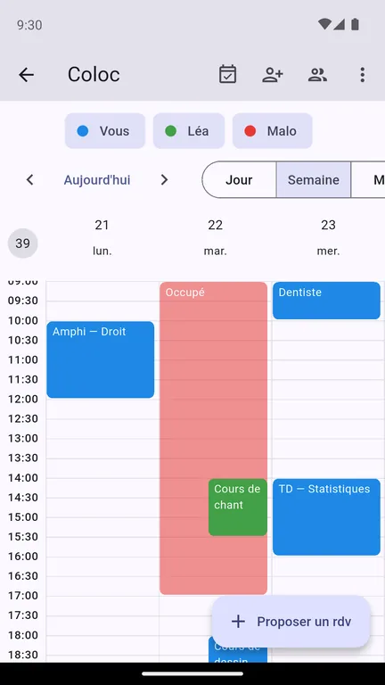
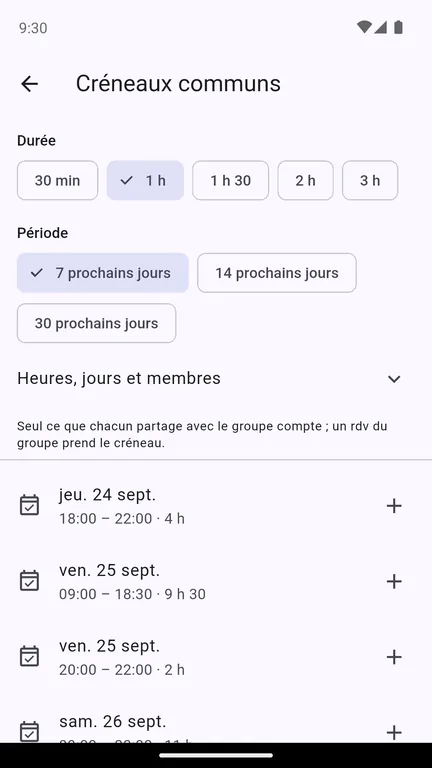

Agora — vos agendas, ensemble
Agora met en commun les agendas d'un groupe — la coloc, la famille, l'équipe, le club. Chacun garde le sien et choisit ce que chaque groupe en voit ; le groupe sait qui est pris, trouve un créneau qui va à tout le monde, et propose un rendez-vous.



Un niveau de détail par groupe
Pour chaque groupe, vous décidez : tous les détails, ou seulement « occupé » sans dire de quoi il s'agit. Le même jeudi soir peut être « Cours de dessin » pour vos colocataires et « occupé » pour le club de rando. Un rendez-vous précis, ou un agenda entier, peut aussi rester invisible.
Voir qui est pris, trouver le bon créneau
L'agenda du groupe superpose les semaines de ses membres, une couleur chacun : on y lit les creux, pas les secrets. Dites la durée qu'il vous faut et la période à regarder, Agora liste les moments où personne n'est pris. Un appui propose le rendez-vous au groupe, et chacun répond présent, peut-être ou absent.
Vos agendas extérieurs, à jour tout seuls
Collez le lien iCal de votre agenda Google, Outlook ou Apple : Agora le relit régulièrement. Ce lien n'est jamais affiché ni transmis à qui que ce soit.
Y aller, et Discord
Sur un rendez-vous qui a un lieu, « Y aller » ouvre l'itinéraire en transports dans votre app de cartes. Et un bot Discord peut publier l'agenda du groupe dans un salon, avec des rappels ; vos rendez-vous personnels n'y apparaissent que comme « occupé ».
Se connecter
Par adresse e-mail, ou avec Google ou Discord. Avec Google, Agora ne reçoit que votre nom et votre adresse e-mail — jamais votre agenda Google, ni aucune autre donnée de votre compte.
Ce qu'Agora ne fait pas
Pas de publicité, pas de revente de données, pas de profilage. Vos rendez-vous ne servent qu'à ce que vous en faites, et vous supprimez votre compte quand vous voulez. Le détail est dans la politique de confidentialité.
Agora est éditée par Lelio Buton, particulier. Contact : heianenterpriseyt@gmail.com.
Agora — your calendars, together
Agora brings together the calendars of a group — flatmates, family, a team, a club. Everyone keeps their own and decides what each group sees of it; the group knows who is busy, finds a time that suits everyone, and proposes an event.
One level of detail per group
For each group, you decide: full details, or just "busy" without saying what. The same Thursday evening can be "Drawing class" for your flatmates and "busy" for the hiking club. A single event, or a whole calendar, can also stay invisible.
See who is busy, find the right time
The group calendar overlays its members' weeks, one colour each: you read the gaps, not the secrets. Say how long you need and which period to look at, and Agora lists the times when nobody is busy. One tap proposes the event to the group, and everyone answers going, maybe or not going.
Your outside calendars, kept up to date
Paste the iCal link of your Google, Outlook or Apple calendar: Agora re-reads it regularly. That link is never displayed or passed on to anyone.
Get there, and Discord
On an event with a place, "Get there" opens the public transport route in your maps app. And a Discord bot can post the group's calendar in a channel, with reminders; your personal events only show there as "busy".
Signing in
With an email address, or with Google or Discord. With Google, Agora only receives your name and email address — never your Google calendar, nor any other data from your account.
What Agora does not do
No advertising, no selling of data, no profiling. Your events only serve what you do with them, and you delete your account whenever you like. Details are in the privacy policy.
Agora is published by Lelio Buton, a private individual. Contact: heianenterpriseyt@gmail.com.